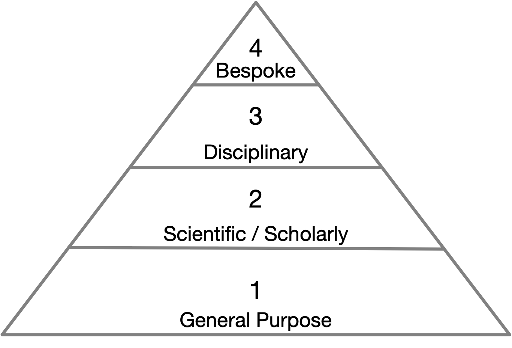

Hinsen’s Layers of Scientific Software
Beyond the theoretical and methodological challenges, reading and reviewing code introduces practical challenges as well. Foremost is the problem of determining what code is actually in scope for these practices. The rabbit hole runs deep as research code is built on top of standard libraries, which are built on top of programming languages, which are built on top of operating systems, and on and on. Methodologically, a boundary must be drawn between the epistemologically salient code and the foundational context within which it executes. Hinsen (2017) makes a useful distinction that divides scientific software into four layers. First, there is a layer of general software. Generalized computational infrastructure like operating systems, compilers, and user interfaces fall into this category. Generic tools like Microsoft Word or Apache OpenOffice or general-purpose programming language like Python or C, while heavily used in scientific domains, also have a rich life outside of science (and academia more broadly). The second layer comprises scientific software. Applications, libraries, or software packages that are not as general purpose as layer one, rather they are designed for use in scientific or academic activities. For example, Stata or SPSS for statistical analysis, Open-MPI for parallel computing in high performance computing applications, or Globus as a general tool for managing data transfers, AntConc for text corpus analytics, Classical Text Editor to create editions of ancient texts, or Zotero for bibliographic data management. A third layer comprises disciplinary software, libraries for use in specific epistemological contexts for analysis of which the Natural Language Toolkit (NLTK) or the Syuzhet R package for literary analysis are excellent examples. The design of Syuzhet means it can be used in a variety of analyses, not just the analysis performed by Jockers (2014, 2015). Disciplinary software is distinct from lower layers as it embeds certain epistemological and methodological assumptions into the design of the software package that may not hold across disciplinary contexts. Lastly, there is a fourth layer of bespoke software. This layer comprises project specific code developed in pursuit of the very specific set of tasks associated with a particular analysis. This is the plumbing connecting other layers together to accomplish a desired outcome. Unlike the previous layers, this code is not meant to be generalized or reused in other contexts.

Fig.1 : Hinsen’s layers of scientific software
As argued above: with an ever-increasing frequency project specific bespoke code is created and used in textual scholarship and literary studies (cf. for instance Enderle 2016; Jockers 2013; Piper 2015; Rybicki, Hoover, and Kestemont 2014; and Underwood 2014). The algorithms, code, and software underpinning the analyses in these examples are not completely standardized ‘off the shelf’ software projects or tools. These codebases are not a software package such as AntConc that can be viewed as a generic distributable tool. Instead these codebases are (in Hinsen’s model) the fourth layer of bespoke code: they are one-off highly specific and complex analytical engines, tailored to solving one highly specific research question based on one specific set of data. Reuse, scalability, and ease-of-use are—justifiably (Baldrigde 2015)—not specific aims of these code objects. This is code meant only to run once.
The words, prose, narrative of a scholarly article express a rhetorical procedure. When reviewing a scholarly article, the focus is on the underlying argument and its attending evidence. Scholarly evaluation pertains not to the specifics of the prose, the style of writing, the sentence structure—unless of course they are so bad as to distract from the underlying argument. One could argue, paying attention to the details of code is equivalent to paying attention to the wordsmithing and thus missing the forest for the trees, that is, fetishizing the material representation at the expense of the methodological abstraction. However, the significant difference is that the words are plainly visible to any and all readers, whereas the code is often hidden away in a GitHub repository (if we are lucky) or on a disk somewhere in a scholar’s office (or in cloud storage). We argue the computational and data driven arguments are missing the material expression (the code) of their methodological procedures. The prosaic descriptions currently found in computational literary history and the digital humanities are not sufficient. If the prose is an expression of the argument, with charts and numbers and models as evidence then the code, which is the expression of the methodological procedures that produced the evidence, is just as important as the words. Our thinking is not unlike Kirschenbaum’s (2008) forensic approaches to writing in that just as digital text has a material trace, methodological analysis also has a materiality inscribed in code. However, we perhaps go father to argue these inscriptions should be surfaced in publication. Why write an abstract prosaic description of methodological procedures divorced from the codified expression of those procedures? Why not interweave both?
We contend that because of their specificity and their pivotal analytic function we must regard bespoke code as an inherent part of the scholarly argument and discourse. And as such, bespoke code needs specific readership and rigorous review, like any argument in humanities research. How the specific literacy for this should be developed and enacted is, however, an unexplored frontier. We introduce defactoring as a method for reading, critically analyzing, and evaluating bespoke code of computational scholarship.